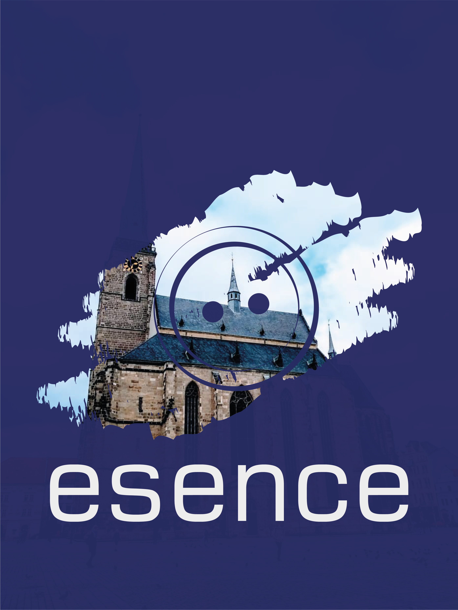

Pravidla hry*
Před detailním studováním pravidle je vhodné pročíst stránku O Esencích.
Obecná
- Pravidlo číslo jedna: Nebuď dement.
- Hra probíhá od pátku 22. 3. odpoledne do pátku 5. 4. v noci. Někteří hráči mohou začít i o pár dní dříve (nejdříve však 18. 3.).
- Situace nastalé v průběhu hry řešte slušně a rozumně, berte ohledy na ostatní hráče i své okolí.
- V případě ohrožení zdraví či v situacích, které jsou hráči velice nepříjemné, použijte heslo “Rudá
stop”, kterým se zastaví hra.
- Řešení konfliktů - pokud si nevíte rady, postupuje se takto:
- Postupujte podle pravidel
- Domluvte se
- Použijte herní appku
- Viz první pravidlo
- Domluvte se
- Vraťte se na začátek, pokud to nepomáhá, pokračujte dál
- Nebojte se zavolat orgům : Aki - 722 590 066
Tygr - 731 274 557
- Ruka na hlavě - Dlaň na temeni (to je shora hlavy) označuje, že hráč či organizátor
momentálně nehraje - většinou proto, aby něco organizačně vyjasnil “mimo hru”, nebo má naléhavý
důvod hru přerušit. Pokud je to třeba, zastavte hru a vzniklou situaci se snažte vyřešit.
Schopnosti
- Schopnost mi dává určitou nadpřirozenou moc, kterou mohu ovlivnit dění ve hře, či ostatní hráče.
Může jít o schopnosti od ubírání esenciálních životů až po čtení myšlenek
- Schopnosti mohou upravovat a modifikovat pravidla - mají tedy vyšší prioritu.
- Schopnost můžete pouze znát, mít ji evidovanou v Aplikaci, aniž byste ji mohli použít.
- Aby jste schopnost mohli použít, musíte splnit všechny její podmínky. Podmínkou může být například
znalost schopnosti, držení určitého artefaktu, 7 obětovaných panen za měsíčního svitu, apod.
- Pokud jakoukoli schopnost použiji proti někomu, protivník má právo mě požádat o ověření pravidel a
splnění podmínek pomocí Aplikace.
Nástroje jsou neherní pomůcky, které řeší práci s pravidly nebo jejich provádění. Ve hře se tváříme,
jako by tam takové předměty nebyly.
- Aplikace je neherním nástrojem slouží především k následujícímu:
- K dokazování, odhalování a kontrole splněných podmínek jednotlivých schopností.
- Jako médium k obdržení herních informací, které se vám vyjeví v mysli.
- K provádění speciálních herních schopností.
-
Sběrné schránky
- Smím použít pouze tak, jak mi popisují schopnosti v Aplikaci.
- Esence v nich jsou “spálené” - nevidím je a nemohu si je vzít.
Herní předměty
Herní předměty jsou všechny předměty, se kterými můžete ve hře pracovat a mají nějaký herní význam nebo
jsou prostě nějak spojeny s hrou. Nelze brát předměty, které jsou v držení jiného hráče. Proto, abyste
tak mohli učinit, musíte mít herní schopnost nebo vaše oběť musí být paralyzována. Příležitost
samozřejmě dělá zloděje, ale o hračky se nepřetahujeme. Herní schopnosti lze rozdělit na několik
druhů:
Předměty, které mohou být vázané na jiné předměty:
- Esence (knoflíky) jsou specifickým nositelem prazvláštní esenciální energie, která
dovoluje konat nadpřirozené věci
- Esenci nemohu našít ani utrhnout, nedovolí-li mi to schopnost
-
S nenašitými esencemi mohu libovolně obchodovat a měnit je. V naší hře působí i jako měna.
-
Druky (patenty)
- Pokud je druk v lisován do předmětu mohu do něj všít jednu esenci stejné barvy
- Druk nemohu vlisovat či vytrhnout bez použití schopnosti
- ELP (velké knoflíky) značí, že jste ve hře.
- Každý hráč je povinen své ELP (pokud jej má našité) mít po dobu hry vždy viditelné.
- Bez použití schopnosti nelze utrhnout ani našít své či cizí ELP
- Našité ELP dává vlastníkovi 1 esenciální život
- Pokud jsem připraven o ELP, zapomínám vše, co se Esencí a mé účasti v nich týká. Pokud
nevím, jak se vrátit do hry, volám organizátorům.
Při zničení esence, druku nebo k ELP dochází k jejich hernímu znehodnocení (vyprchá z nich energie a
jsou nadále nepoužitelné) - Neničte je záměrně, je v nich většina peněz z vaší registrace
Předměty nevázané:
- Obyčejné předměty jsou všechny předměty, které nějak souvisí se hrou. Jde např. o
herní knihy, poznámky, papírky hráčů s různými informacemi - prostě neodrukované předměty, které ale
mohou mít
herní význam.
- Artefakty jsou předměty, v nichž jsou v lisované druky. Artefakty mohou podmiňovat
určité schopnosti. V podstatě to znamená, že daný artefakt má schopnost. (např. znám schopnost
Bezvadné
dýky, která říká, že pokud držím Bezvadnou dýku a zasáhnu pomoconí ní soupeře, ubere mu jeden
esenciální život. Potřebuju mít tudíž v ruce správně odrukovanou dýku, která se tím stává
bezvadnou).
- Zbraně jsou specifickým druhem artefaktu, který lze použít ve fyzickém souboji. Ve
hře se používají měkčené a Nerf zbraně. Nejde o reprezentace reálných zbraní, jsou to prostě měkčené
mečíky a
pistolky, které nesou esenciální schopnost.
- Herní zbraň je jasně a viditelně označena v lisovanými druky do glejtu a nebo do zbraně.
- Po skončení hry se všechny odrukované herní předměty vrátí jejich majitelům
- Glejt reprezentuje zbraň. V případě herního “odcizení” zbraně s glejtem se
přesouvá pouze glejt, ne zbraň. Ta zůstává ve vlastnictví hráče, již však nenese schopnost.
- Odcizený glejt lze připnout pouze na zbraň schválenou organizátory.
- Do hry vstupují pouze zbraně, které prošly schvalovacím procesem na neschválené zbraně je
zakázáno dávat glejty.
Fyzický souboj
- Ve hře se může fyzicky bojovat měkčenými nebo nerf zbraněmi.
- Bojovat jinak, než odrukovanými zbraněmi nebo mentálním soubojem je zakázáno.
- Pokud mám pochybnosti o své či protivníkově zbrani, zastavím souboj (viz Řešení konfliktů).
- Za nezásahovou zónu se považuje hlava, rozkrok a ruce (od zápěstí po nehty). Do této zóny zásah
neplatí, nezneužívejme toho.
- Neútočí se na hlavu a rozkrok!
- Zásah musí být tlumený a přizpůsobený stavu nepřítele (musí být cítit, nesmí zranit).
- Zásah uznává zasažený (vidím, cítím, věřím).
-
V případě fyzického souboje prokazuji své schopnosti, nebo schopnosti zbraní, až po jeho skončení.
- Pokud přijdu o všechny esenciální životy, nastává tzv. “spánková paralýza” (jsem na 2 minuty
paralyzován - paralýza se u každého projevuje jinak (válení se v křečích v blátě
není pro každého), efekt na hru má ale stejný. Paralyzovaný na dotaz odevzdává bez
odporu a prodlev své nevázané herní předměty.
Mentální souboj
- Mentální souboj je specifický druh konfliktu, při němž mohu využít esenciální energie, abych z
protihráčů získal cenné informace, našité esence nebo jej donutil k nějakým činům proti jejich vůli.
- Hráče v Mentálním souboji mohu ovlivnit pouze tím, že se do MS přidám. Tím pádem je nemohu nijak
napadat, konfrontovat je, ani s nimi komunikovat. Hráči v MS jsou jakoby vyjmuti z dění v realitě.
- V Mentálním souboji mohu použít pouze našité esence.
- Po skončení MS nemůže hráč po dobu 2 minut další ment. souboj začít.
- Pokud zatáhneš do MS někoho, kdo jej neumí, nauč ho to.
- Více o mentálním souboji se dozvíte během hry.
* Pravidla se mohou měnit
O tvůrcích
tvůrčí skupina Ale?!

Tvůrčí skupina Ale?! vznikla před mnoha lety a teď se znovu vrací v plné sestavě a s projektem který byl
dlouho u ledu, aby mohl být vyzdvihnut až přijde jeho čas.
Tvůrci jsou Tygger, Smolda, Aki, Olie a Tkaj.
FB